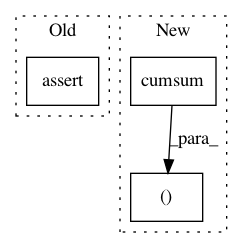

cac5f014c09193f7a5ad6b71e4012defa0a96baa,src/gensim/matutils.py,,corpus2csc,#Any#Any#Any#,24
Before Change
docs = i + 1
mat._shape = (docs, m)
mat = mat.tocsr().transpose() // transpose back to documents=columns
assert isinstance(mat, scipy.sparse.csc_matrix)
return mat
After Change
indices.extend([feature_id for feature_id, _ in doc])
data.extend([feature_weight for _, feature_weight in doc])
docs += 1
indptr = numpy.cumsum(indptr)
data = numpy.asarray(data)
indices = numpy.asarray(indices)
return scipy.sparse.csc_matrix((data, indices, indptr), shape = (num_terms, docs), dtype = dtype)
def pad(mat, padRow, padCol):
In pattern: SUPERPATTERN
Frequency: 3
Non-data size: 3
Instances
Project Name: RaRe-Technologies/gensim
Commit Name: cac5f014c09193f7a5ad6b71e4012defa0a96baa
Time: 2010-09-05
Author: radimrehurek@seznam.cz
File Name: src/gensim/matutils.py
Class Name:
Method Name: corpus2csc
Project Name: RaRe-Technologies/gensim
Commit Name: c55d1b295cb6717ba6494917b88183e8d3f284a9
Time: 2010-09-05
Author: piskvorky@92d0401f-a546-4972-9173-107b360ed7e5
File Name: src/gensim/matutils.py
Class Name:
Method Name: corpus2csc
Project Name: scipy/scipy
Commit Name: 818f53a80a6b2b866781440d1669cef1859f69f6
Time: 2013-12-08
Author: evgeni@burovski.me
File Name: scipy/stats/tests/test_discrete_basic.py
Class Name:
Method Name: check_pmf_cdf